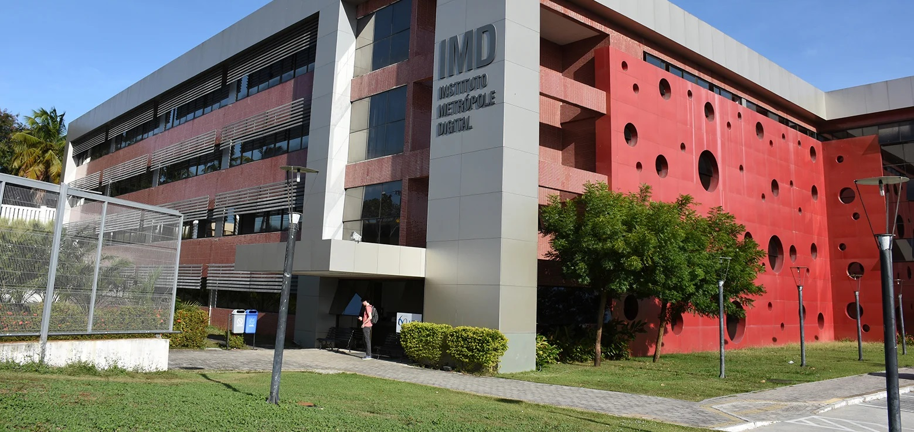

Conheça o IMD

O Instituto Metrópole Digital (IMD) é uma Unidade Acadêmica Especializada da Universidade Federal do Rio Grande do Norte (UFRN), com um perfil diferenciado da maioria dos centros acadêmicos e departamentos das universidades federais brasileiras. Esse perfil alinha-se com sua missão de fomentar a criação de um Polo Tecnológico em Tecnologia da Informação (TI) no estado do Rio Grande do Norte, abrangendo iniciativas dos setores público, privado e acadêmico, a base para a sua estrutura organizacional.
O IMD atua na formação dos níveis técnico, superior e na pós-graduação, cujas ações integram a inclusão social e digital. Somam-se a isso ações de pesquisa e inovação tecnológica, de formação de talentos e de incentivo à cultura do empreendedorismo, que resultaram na criação da incubadora de empresas de base tecnológica em TI do Metrópole Parque, antes conhecida como Inova Metrópole.
O Instituto tem um perfil de integração com outros departamentos e unidades da UFRN, objetivando fomentar a interdisciplinaridade com outras áreas relacionadas à TI, visto que essa é a base da inovação e o caminho para formar profissionais preparados para o novo mercado de trabalho.
O perfil de gestão do IMD também apresenta particularidades específicas, seguindo os princípios de integração, interdisciplinaridade e inovação. A Diretoria Executiva e o Conselho de Desenvolvimento Acadêmico são compostos por servidores docentes e técnico-administrativos de diferentes departamentos e áreas do conhecimento. Além disso, há o Conselho Consultivo, que inclui pessoas, externas ao IMD, com notório saber e experiência em seus campos de atuaçã